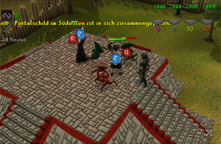
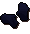

")
Der Kammerjäger
Einführung | Lage | Voraussetzungen | Empfohlene Ausrüstung
Verteidigung gegen die Horden | Belohnungen | Entwicklung
Verteidigung gegen die Horden | Belohnungen | Entwicklung
Nur RuneScape-Mitglieder haben Zugang zu diesem Minispiel. Wenn ihr euch anmeldet, könnt auch ihr dieses Feature nutzen.
Bitte beachtet, dass es sich hierbei um ein 'sicheres' Minispiel handelt. Falls ihr während des Minispiels sterbt, behaltet ihr alle eure Gegenstände.
Einführung

Neben den häufigsten Einbruchsstellen wurden Außenposten für die Kluftritter errichtet, die mithilfe ihrer Magie die Portale geschlossen halten sollten. Leider wurden die Eindringlinge immer aggressiver und haben es geschafft, einige Außenposten zu überrennen, bevor das Ritual ausgeführt worden konnte. Gibt es jemanden, der den Kluftrittern zu Hilfe eilt und die Kreaturen zurückschlagen kann?
Lage

Macht euch auf die Suche nach dem links eingezeichneten Boot, das sich südlich von der Lady Lumbridge befindet, und sprecht mit dem Knappen. Der Knappe wird euch von der schrecklichen Situation berichten, in der sich der Außenposten der Kluftritter befindet, und euch fragen, ob ihr dorthin reisen wollt.
Wenn ihr bejaht, tretet ihr die lange Segelfahrt zum Außenposten an, der sich südlich des Affenatolls befindet.
Ihr landet am nördlichen Anlegesteg des Außenpostens, von dem ihr unten eine Karte sehen könnt.

Hier gibt es einige Läden und sogar eine Bank für euch.
Der Bognereiladen verkauft Fernkampf-Waffen, wie zum Beispiel Wurfspeere, aber auch Pfeilspitzen bis zu Runit-Qualität.
Der Herr in der Schmiede kümmert sich um zerbrochene Werkzeuge und Rüstzeug aus den Grabhügeln. Seine Dienstleistungen gleichen denen seiner Kollegen im Rest von RuneScape, zu denen auch Bob in Lumbridge zählt.
Der Magieladen verkauft Runen zu einem fairen Preis, um euch beim Kampf gegen die Kreaturen zu unterstützen.
Voraussetzungen
'Der Kammerjäger' gibt es in drei Schwierigkeitsstufen.
- Für das Neulingsboot braucht ihr eine Kampfstufe von mindestens 40.
- Für das Boot für Fortgeschrittene braucht ihr eine Kampfstufe von mindestens 70.
- Für das Boot für Veteranen braucht ihr eine Kampfstufe von mindestens 100.
Empfohlene Ausrüstung
Da ihr es mit wahren Heerscharen von Kreaturen aufnehmen müsst, ist gutes Rüstzeug unbedingt empfohlen. Wenn ihr als Magier antretet, braucht ihr Runen für eure Zaubersprüche. Falls ihr euch für Fernkampf entscheidet, müsst ihr eure bevorzugte Munition mitnehmen. Bitte beachtet, dass Runen oder Munition, die ihr verbraucht, nicht ersetzt werden.
Außerdem empfiehlt es sich, gutes Essen mit ins Gefecht zu nehmen. Wenn ihr sterbt, werdet ihr in der Nähe wiederauferstehen, ohne eure Gegenstände zu verlieren. Ihr könnt dann also einfach zurück in den Kampf stürmen.
Einen Hammer und eine Axt solltet ihr ebenfalls im Gepäck haben, da eure Verteidigungsvorrichtungen, Wände oder Tore, vermutlich (eigentlich fast sicher!) fallen werden. Mit der Axt könnt ihr euch neues Holz besorgen und mit dem Hammer lassen sich beschädigte Tore/Zäune reparieren.
Bitte beachtet, dass Kanonen auf der Insel nicht erlaubt sind.
Verteidigung gegen die Horden

Sobald ihr auf der Insel angekommen seid, geht die Schlacht los! Das Ziel des Spiels ist es, den Kluftritter zu verteidigen und so die Belohnung einzuheimsen. Wie viele Kreaturen auf euch losgelassen werden, hängt von der Anzahl eurer Mitstreiter und der gewählten Schwierigkeitsstufe (Neulinge, Fortgeschrittene oder Veteranen) ab. Je größer die Gruppe ist, desto mehr Monster kommen durch die Portale.
Auf der Insel gibt es 4 Portale (wie in der Karte eingezeichnet). Diese Portale bringen Kreaturen hervor, die im nächsten Abschnitt näher besprochen werden. Jedes Monster hat eine besondere Fähigkeit oder Aufgabe im Minispiel, also solltet ihr euch eine Angriffs- und Verteidigungsstrategie überlegen.
 Jedes der Portale ist von einem magischen Feld umgeben, daher könnt ihr erst angreifen, wenn es dem Kluftritter gelungen ist, den Verteidigungsmechanismus zu durchbrechen. Daher solltet ihr den Kluftritter unbedingt so lange am Leben erhalten, bis alle Portale angreifbar sind. In dem Bild rechts sieht man, zum Beispiel, dass das blaue Portal keinen Schutzschild mehr hat und somit angegriffen werden kann. Die anderen drei Portale sind jedoch immer noch immun.
Jedes der Portale ist von einem magischen Feld umgeben, daher könnt ihr erst angreifen, wenn es dem Kluftritter gelungen ist, den Verteidigungsmechanismus zu durchbrechen. Daher solltet ihr den Kluftritter unbedingt so lange am Leben erhalten, bis alle Portale angreifbar sind. In dem Bild rechts sieht man, zum Beispiel, dass das blaue Portal keinen Schutzschild mehr hat und somit angegriffen werden kann. Die anderen drei Portale sind jedoch immer noch immun. Ihr werdet in eurem Chatfenster darauf hingewiesen, wenn der Kluftritter ein magisches Feld durchbrochen hat. Außerdem könnt ihr den Status auch immer in den Spielinformationen im oberen Bereich eures Bildschirms ablesen.
Das Spiel ist beendet, wenn der Kluftritter zwanzig Minuten lang erfolgreich verteidigt wurde oder alle Portale zerstört wurden (was für Auswirkungen die beiden möglichen Ausgänge des Spiels haben, wird weiter unten erklärt).
Die Monster
Die Kampfstufe der Monster wechselt je nach der gewählten Schwierigkeitsstufe. Wenn ihr in das Neulingsboot eingestiegen seid, sind die Kreaturen viel schwächer als die, mit denen die Veteranen sich rumschlagen müssen.Bitte beachtet: Wenn ihr Monster im Minispiel 'Der Kammerjäger' tötet, erhaltet ihr dafür weniger Kampf-EP, als wenn ihr andere Monster im Rest von RuneScape bekämpft. Das liegt daran, dass die von euch gesammelten Kluftritter-Belobigungspunkte zusätzlich noch in EP umgetauscht werden können.
![[Bild]](../../img/main/kbase/minigames/pest_control/brawler.gif)
|
![[Bild]](../../img/main/kbase/minigames/pest_control/defiler.gif)
|
|
| Stampfer Stampfer sind große Monster, deren Kampfstufe und Farbausprägung variieren kann. Normalerweise verteidigen diese trampeligen Biester die Portale und wagen sich nicht zu weit in das Fort hinein. Nehmt euch in Acht, denn sie werden versuchen, jeden zu zermalmen, der sich ihnen in den Weg stellt. Stampfer versperren euch den Weg, das heißt, ihr müsst um sie herumgehen. |
Besudler Besudler sind flink und schnell und haben ebenfalls verschiedene Kampfstufen und Farben. Sie werfen große Widerhaken und können damit auch weit entfernte Ziele (wie euch oder den Kluftritter) erreichen und ihnen so großen Schaden zufügen. |
|
![[Bild]](../../img/main/kbase/minigames/pest_control/ravager.gif)
|
![[Bild]](../../img/main/kbase/minigames/pest_control/shifter.gif)
|
|
| Wüter Wüter sind kleine menschenähnliche Biester mit maulwurfsartigen Klauen. Sie haben überhaupt keine Probleme damit, mit ihren Schaufelhänden ganze Verteidigungsvorrichtungen einzureißen. Wenn ihr eure Verteidigung optimieren wollt, solltet ihr diese Biester töten, bevor sie eure Tore zerstören. |
Wandler Wandler sind gefährliche Nahkampf-Gegner mit großen Dornen auf dem Rücken. Sie haben unterschiedliche Kampfstufen und Farben. Vorsicht! Diese Kreaturen können sich selbst kleine Portale hervorzaubern, mit denen sie sich kleine Entfernungen weit teleportieren können. Damit kommen sie sogar an Wänden vorbei und Stockwerke hinauf. |
|
![[Bild]](../../img/main/kbase/minigames/pest_control/spinner.gif)
|
![[Bild]](../../img/main/kbase/minigames/pest_control/splatter.gif)
|
|
| Spinnwerker Spinnwerker schweben über dem Boden und flicken mit ihren spinnenartigen Beinen die Portale. Sie stürzen sich nicht ins Gefecht und werden nicht versuchen, den Kluftritter anzugreifen, aber sie müssen dennoch getötet werden, bevor sie es schaffen, die Portale zu reparieren. Wenn ein Portal zerstört wird, explodieren alle Spinnwerker in der Nähe und verletzen und vergiften alle Spieler, die zu nahe bei ihnen stehen. |
Wabbelbomber Ein Wabbelbomber sieht aus wie ein großer, mit pulsierender Flüssigkeit gefüllter Ball mit einem Auge in der Mitte. Man darf diese Wesen auf keinen Fall unterschätzen. Sie sind äußerst gefährlich und hüpfen am liebsten in euer Fort und explodieren dort. Das schadet allen Gegenständen und Spielern, die in der Nähe sind. |
|
![[Bild]](../../img/main/kbase/minigames/pest_control/torcher.gif)
|
||
| Zündler Auch Zündler können unterschiedliche Farben und Kampfstufen aufweisen. Sie haben Flügel und fliegen direkt auf den Kluftritter zu, um ihn anzugreifen. Sie greifen aus der Ferne an, benutzen aber magisches Feuer. |
Angriff

Beim Angriff ist es eure Aufgabe, zu den Portalen zu gelangen und diese zu zerstören. Daran werden euch die Kreaturen an den Portalen (z.B. die Stampfer) zu hindern versuchen. Ihr solltet unbedingt die oben beschriebenen Spinnwerker aufhalten, die sich in der Nähe der Portale aufhalten, da sie die Portale in kürzester Zeit reparieren können. Daher müssen diese Kreaturen als Erstes besiegt werden.
Magier und Fernkämpfer finden in der relativen Sicherheit der Türme starke Angriffspositionen. Sie können vom Turm aus Zaubersprüche oder Pfeile abfeuern und die Monster ablenken, damit diese nicht den Kluftritter angreifen.
Wie oben schon erwähnt, sind die Wandler eure Hauptgegner in den Türmen. Sie können sich über ihre eigenen kleinen Portale in eure Nähe teleportieren - vom Erdboden bis hoch in den Turm.
Ein erfolgreicher Angriff hilft auch den Verteidigern, da der Kluftritter für jedes zerstörte Portal 500 Punkte geheilt wird.
Verteidigung
Sich hinter Wänden zu verschanzen ist schön und gut, aber den Kluftritter werden Wände alleine nicht retten - das könnt nur ihr und euer Team.Eure Hauptaufgabe ist es, den Kluftritter gegen die Besudler, Zündler und Wandler zu verteidigen. Besudler und Zündler sind gefährlich, da sie SEHR weitreichende Magie- und Fernkampfattacken benutzen (weiter oben findet ihr mehr Informationen über die Kreaturen und deren Angriffsstile).
Ihr müsst eure Nahkampf-Krieger aussenden, um diese Kreaturen zu bezwingen, oder Magier und Fernkämpfer aus sicherer Entfernung (z.B. von den Türmen aus) auf sie ansetzen. Wandler sind ebenfalls gefährlich, da sie sich direkt neben den Kluftritter teleportieren und ihn sofort angreifen können.

Ihr müsst Gebiete mit zerstörten Toren besonders gut verteidigen, um die Kreaturen abzuhalten, die zum Kluftritter vordringen wollen. Ihr könnt allerdings auch jemanden mit Holzscheiten und einem Hammer losschicken, der die Tore repariert.
Vorsicht! Wenn die Wüter nicht getötet werden, rennen sie die Tore erneut ein, auch wenn diese gerade wieder aufgebaut wurden.
Belohnungen
Es gibt zwei Arten, dieses Minispiel zu gewinnen.
- Ihr könnt den Kluftritter 20 Minuten lang erfolgreich verteidigen.
- Ihr könnt alle Portale zerstören.
Solange der Kluftritter die Attacke überlebt, habt ihr gewonnen und erhaltet dafür Punkte.
- Wenn ihr im Neulingsboot wart, bekommt ihr dafür 2 Punkte.
- Wenn ihr im Boot für Fortgeschrittene wart, bekommt ihr dafür 3 Punkte.
- Wenn ihr im Boot für Veteranen wart, bekommt ihr dafür 4 Punkte.
Wichtig: Wenn ihr nicht mindestens 500 Trefferpunkte Schaden austeilt (gegen Monster oder Portale), bekommt ihr keine Punkte. Durch das Reparieren von kaputten Verteidigungsvorrichtungen könnt ihr euch 50 Trefferpunkte dazuverdienen.
Außerdem erhaltet ihr das Zehnfache eurer Kampfstufe in Goldmünzen ausgezahlt, wenn ihr beim Kammerjäger ein Spiel gewinnt.
Ihr könnt maximal 250 Punkte sammeln. Um die Punkte einzulösen, sprecht mit einem der vielen Kluftritter im Außenposten oder klickt ihn mit der rechten Maustaste an. Die Kluftritter bieten euch nur in den Fertigkeiten Training an, in denen ihr mindestens Stufe 25 erreicht habt.
Wichtig: Wenn ihr 100 Punkte gleichzeitig tauscht, gewähren euch die Kluftritter einen Bonus von 10 % auf die EP, die ihr kauft! Falls ihr 10 Punkte eintauscht, bekommt ihr einen Bonus von 1 %.
Kluftritter-Streitkolben
Der einzigartige Streitkolben ist nicht nur eine starke Nahkampfwaffe, sondern verleiht euch auch 10% mehr Magieschaden, während ihr ihn handhabt.
Ihr müsst Angriff, Stärke, Verteidigung, Lebenspunkte, Fernkampf und Magie mindestens auf 42 trainiert und mindestens Stufe 22 in Gebet erreicht haben, damit die Ritter euch diesen Gegenstand aushändigen.
| Gegenstand | |||||||||||||||||||
| Angriffsboni | Verteidigungsboni | Sonstiges | |||||||||||||||||
![[Bild: Stechen]](../../img/main/kbase/table_text/stab1.gif "Stechen") |
![[Bild: Schlitzen]](../../img/main/kbase/table_text/slash1.gif "Schlitzen") |
![[Bild: Schmettern]](../../img/main/kbase/table_text/crush1.gif "Schmettern") |
![[image: Magie]](../../img/main/kbase/table_text/magic1.gif "Magie") |
![[Bild: Fernkampf]](../../img/main/kbase/table_text/range1.gif "Fernkampf") |
|
|
|
|
|
![[Bild: Beschwörung]](../../img/main/kbase/table_text/summoning1.gif "Beschwörung") |
![[Bild: Stärke]](../../img/main/kbase/table_text/strength1.gif "Stärke") |
![[Bild: Gebet]](../../img/main/kbase/table_text/prayer1.gif "Gebet") |
|||||||
![[Bild]](../../img/main/kbase/minigames/pest_control/mace.gif) Kluftritter-Streitkolben * |
+ 22 | + 0 | + 41 | + 8 | + 0 | + 2 | + 2 | + 2 | + 2 | + 2 | + 0 | + 38 | + 6 | ||||||
* Während ihr den Streitkolben handhabt, teilt ihr 10% mehr Magieschaden aus.
Kluftritter-Rüstung
Ihr müsst Angriff, Stärke, Verteidigung, Lebenspunkte, Fernkampf und Magie mindestens auf 42 trainiert und mindestens Stufe 22 in Gebet erreicht haben, um den Rittern diese Gegenstände abkaufen zu dürfen.
Wenn ihr einen kompletten Satz der Kluftritter-Rüstung tragt (der Streitkolben ist nicht erforderlich), dann erhaltet ihr einen Satz-Bonus, der von dem Helm abhängt, den ihr tragt.
- Nahkämpfer-Klufthelm: Bonus von 10 % auf Angriff und Schaden
- Magier-Klufthelm: Bonus von 30 % auf Magieangriffe
- Fernkämpfer-Klufthelm: Bonus von 10 % auf Angriff und Schaden
| Gegenstand | |||||||||||||||||||
| Angriffsboni | Verteidigungsboni | Sonstiges | |||||||||||||||||
|
|
|
|
|
|
|
|
|
|
|
|
|
|||||||
![[Bild]](../../img/main/kbase/minigames/pest_control/body.gif) Kluftritter-Robenoberteil |
+ 0 | + 0 | + 0 | + 0 | + 0 | + 45 | + 45 | + 45 | + 45 | + 45 | + 45 | + 0 | + 0 | ||||||
![[Bild]](../../img/main/kbase/minigames/pest_control/skirt.gif) Kluftritter-Robenunterteil |
+ 0 | + 0 | + 0 | + 0 | + 0 | + 30 | + 30 | + 30 | + 30 | + 30 | + 15 | + 0 | + 0 | ||||||
|  Kluftritter-Handschuhe |
+ 0 | + 0 | + 0 | + 0 | + 0 | + 6 | + 6 | + 6 | + 4 | + 6 | + 6 | + 0 | + 0 | ||||||
![[Bild]](../../img/main/kbase/minigames/pest_control/melee_helm.gif) Nahkämpfer-Klufthelm |
+ 0 | + 0 | + 0 | + 0 | + 0 | + 6 | + 6 | + 6 | + 6 | + 6 | + 6 | + 0 | + 0 | ||||||
![[Bild]](../../img/main/kbase/minigames/pest_control/mage_helm.gif) Magier-Klufthelm |
+ 0 | + 0 | + 0 | + 0 | + 0 | + 6 | + 6 | + 6 | + 6 | + 6 | + 6 | + 0 | + 0 | ||||||
![[Bild]](../../img/main/kbase/minigames/pest_control/ranger_helm.gif) Fernkämpfer-Klufthelm |
+ 0 | + 0 | + 0 | + 0 | + 0 | + 6 | + 6 | + 6 | + 6 | + 6 | + 6 | + 0 | + 0 | ||||||
Kluft-Siegel
Die Siegel, die einen Kluftritter auszeichnen, sind mächtige Waffen gegen das Chaos, das die Eindringlinge durch die Portale bringen. Um die Macht des Siegels freizusetzen, müsst ihr darauf rechtsklicken und die Option 'Reiben' auswählen (oder 'Bedienen', wenn ihr das Siegel tragt). Das Siegel fügt dem Ungeziefer in eurem Umkreis Schaden zu. Es hat 8 Ladungen.
| Gegenstand | |||||||||||||||||||
| Angriffsboni | Verteidigungsboni | Sonstiges | |||||||||||||||||
|
|
|
|
|
|
|
|
|
|
|
|
|
|||||||
![[Bild]](../../img/main/kbase/minigames/pest_control/void_seal.gif) Kluft-Siegel |
+ 0 | + 0 | + 0 | + 0 | + 0 | + 1 | + 1 | + 1 | + 1 | + 1 | + 0 | + 0 | + 0 | ||||||
Entwicklung
| Überarbeitung | |||
| Entwicklung: | Graham B | Entwicklung: | Tim C |
| Grafik: | Joe R, Matt M, Linh N | Grafik: | Wayne M, Matt M |
| Qualitätssicherung: | Andy C | Qualitätssicherung: | Nick C |
| Audio: | Ian T | ||

Weitere Artikel in Minispiele
|
|
|
Weiterführende Informationen Wenn euch dieser Artikel nicht weitergeholfen hat, könnt ihr in den folgenden Kapiteln der RuneScape-Webseite mehr Informationen finden:
|
|